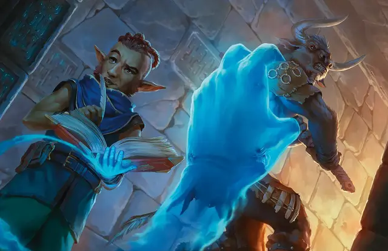

Длань Бигби
Bigby's Hand
5 уровень, Воплощение

Время сотворения 1 действие
Дистанция 120 футов
Компоненты В, С, М (яичная скорлупа и перчатка из змеиной кожи)
Длительность Концентрация, вплоть до 1 минуты
Классы Волшебник, Изобретатель, Чародей
Подклассы бездонный (колдун)
Вы создаёте мерцающую руку Большого размера из полупрозрачного силового поля в свободном пространстве, которое видите в пределах дистанции. Рука существует, пока активно заклинание, и она перемещается по вашей команде, подражая движениям вашей собственной руки. Эта рука является предметом, у которого КД 20, а количество хитов равно максимуму ваших хитов. Когда хиты руки опускаются до 0, заклинание оканчивается. У руки Сила 26 (+8), а Ловкость 10 (+0). Рука не заполняет своё пространство.
Когда вы накладываете это заклинание, а также в последующие ходы, но уже бонусным действием, вы можете переместить руку на расстояние до 60 футов, а затем создать с её помощью один из следующих эффектов:
Могучая длань. Рука пытается толкнуть существо, находящееся в пределах 5 футов от неё, в выбранном вами направлении. Совершите проверку Силы руки, противопоставленную проверке Силы (Атлетика) цели. Если цель Среднего размера или меньше, вы совершаете проверку с преимуществом. В случае успеха рука толкает цель на 5 футов плюс количество футов, равное модификатору базовой характеристики, умноженному на 5. Рука перемещается вместе с целью, оставаясь в пределах 5 футов от неё.
Преграждающая длань. Рука встаёт между вами и выбранным вами существом, пока вы не отдадите руке другую команду. Рука перемещается так, что находится между вами и целью, предоставляя вам от цели укрытие на половину. Цель не может пройти сквозь пространство руки, если её значение Силы не больше значения Силы руки. Если значение Силы у цели больше, чем у руки, она может подойти к вам сквозь руку, но пространство руки для цели считается труднопроходимой местностью.
Сжатый кулак. Рука ударяет одно существо или предмет в пределах 5 футов от себя. Совершите рукопашную атаку заклинанием за руку, используя свои параметры. При попадании цель получает 4к8 урона силовым полем.
Сжимающая длань. Рука пытается схватить существо с размером Огромное или меньше, находящееся в пределах 5 футов от неё. При проверке захвата вы используете значение Силы руки. Если размер цели Средний или меньше, вы совершаете проверку с преимуществом. Пока рука держит цель в захвате, вы можете бонусным действием сдавливать её рукой. Цель при этом получает дробящий урон в размере 2к6 + модификатор вашей базовой характеристики.
На больших уровнях. Если вы накладываете это заклинание, используя ячейку 6-го уровня или выше, за каждый уровень ячейки выше пятого урон от сжатого кулака увеличивается на 2к8, а урон от сжимающей длани увеличивается на 2к6.